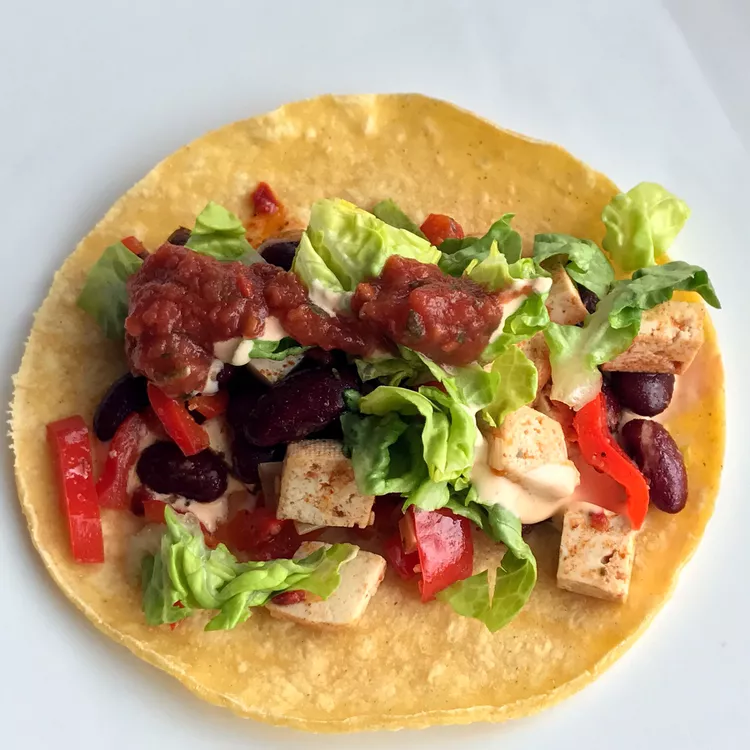

Tofu Tacos

Description
A great tofu taco recipe for a meatless meal.
Ingredients
- 1 (16 ounce) package garden herb tofu, crumbled
- 2 tablespoons vegetable oil
- 1 clove garlic, minced
- ½ cup chopped onion
- 2 teaspoons chili powder
- ¼ teaspoon paprika
- ¼ teaspoon cayenne pepper
- ¼ teaspoon ground cumin
- ¼ teaspoon salt
- ½ lime, juiced
- ½ cup tomato sauce
- ¼ cup chopped fresh cilantro
- 8 medium taco shells, heated
- 2 cups shredded lettuce
- 2 tomatoes, chopped
Steps
- Cook tofu, oil, garlic, and onion in a large skillet over medium heat for 5 minutes. Add chili powder,
paprika, cayenne, cumin, salt, lime juice, and tomato sauce to the skillet and stir. Cook for 3 minutes.
- Stir in cilantro. Spoon mixture into a bowl.
- Spoon tofu mixture into taco shells. Top the mixture with lettuce, tomatoes, avocado, cheese, and salsa.